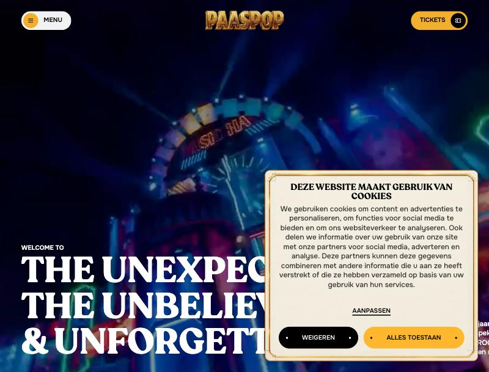
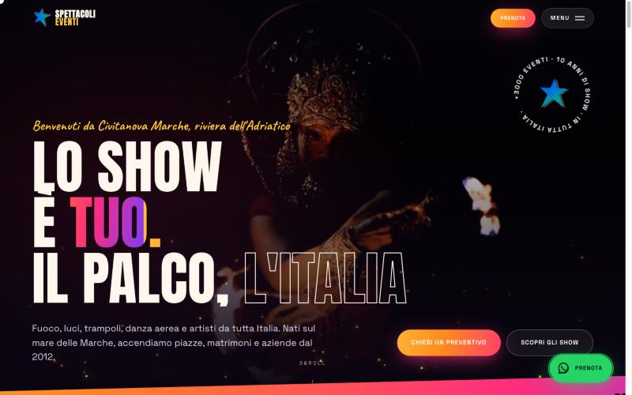

Hero: Paaspop (reference) vs Spettacoli Eventi (nuovo sito)

Paaspop: video a tutto schermo, menu a pillola, titolo gigante in basso a sinistra

Nuovo sito: stessa struttura, in più scintille, gradienti, badge rotante, CTA e WhatsApp